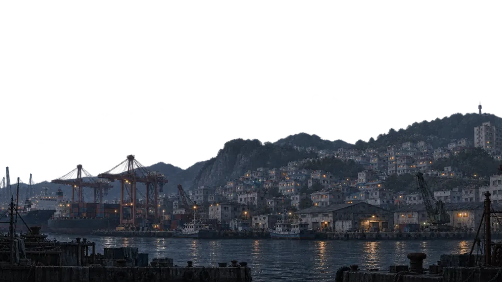
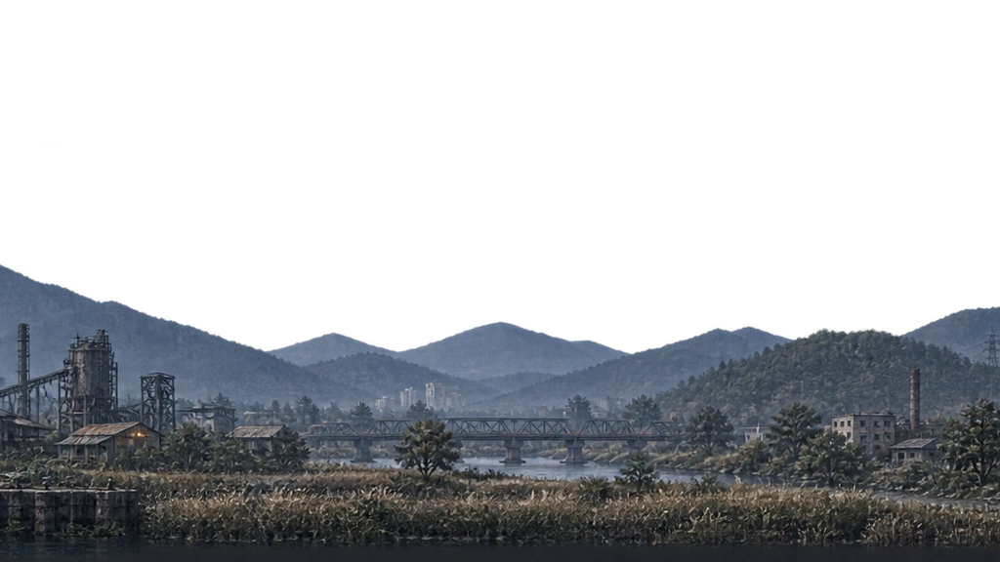
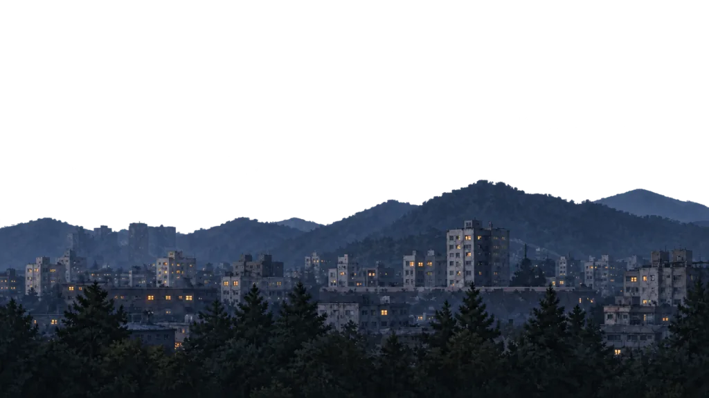

움직임 초안 · 게임 미적용
같은 길을 따라, 양산까지.
풍경을 교체하지 않고, 한 풍경 안을 이동합니다.


부산 → 양산풍경·속도 검토용
60초 뒤 정지합니다. 실제 이동 시간·저장과 무관합니다.
바뀌는 건, 동네의 밀도.
창고 사이로 강변이 보이고, 건물과 풀밭이 섞이다 주거지가 늘어납니다. 산의 크기와 빛은 갑자기 바뀌지 않습니다.
기기의 동작 줄이기 설정으로 자동 이동을 멈췄습니다. 위 구간 선택으로 풍경을 비교할 수 있습니다.
기존 세 원본과 비교
현재 코드가 연결하는 원본들입니다. 아래는 원본 비교이며 실제 캔버스의 이음새·속도 재현은 아닙니다.



현실 지형을 어디까지 반영했나
낙동강과 산지 사이로 시가지가 이어지는 사상·북구의 지형을 참고했습니다. 이 초안은 그 흐름을 압축한 공간·속도 제안입니다. 감천에서 양산까지의 특정 도로, 조망 방향, 개별 건물이나 실제 거리를 그대로 복제하지는 않았습니다.
연속 풍경은 새 생성 후보이며 기존 부산·양산 정본은 보존했습니다. 적용 전에는 정차→출발·도착→정차의 동일 장소 연결, 역방향, 재접속, 실제 날씨·개조 차량과의 합성을 별도로 검수해야 합니다.
정본 4장 참조 · builtin imagegen · 2172×724 원본에서 2160×720 배포. 한 화면에 원본 약1080px을 사용하며 수직 늘리기·강제 선명화는 없습니다. 차량은 기존 자산의 크기 고정 예시이며 실제 개조·조우·제동 재현은 아닙니다.